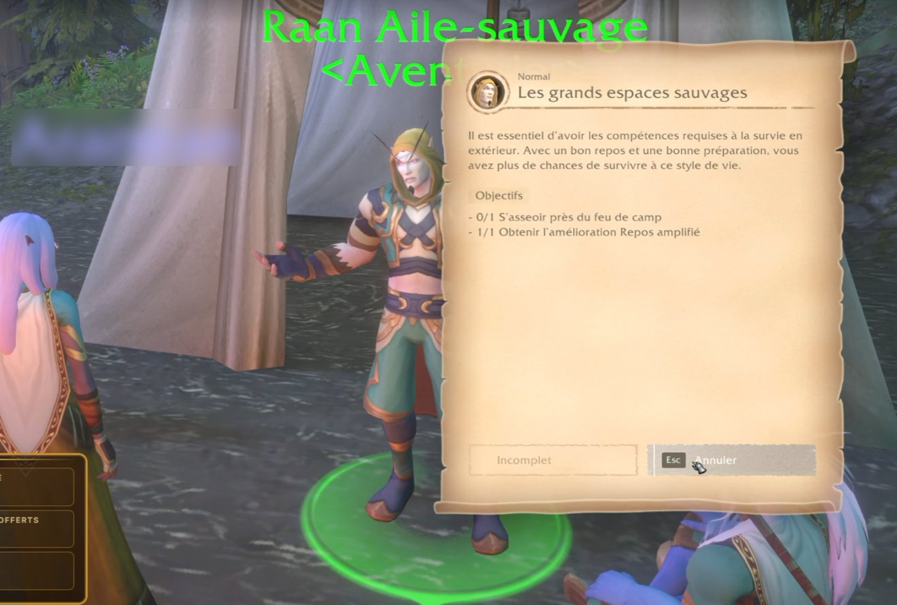

News › Sac de couchage
Sac de couchage douillet : la chaîne de quêtes pas à pas
16 novembre 2026
Un bonus d'expérience de 3 % et du repos n'importe où : le Sac de couchage douillet s'obtient dès le niveau 14, sans un seul combat. Il faut juste beaucoup voyager. Voici le chemin.

Ce que fait le sac
- Chaque minute allongé dessus donne +1 % d'expérience, jusqu'à +3 % au bout de trois minutes.
- Pendant que tu es dedans, tu gagnes du repos, comme dans une auberge.
- Il se pose partout sauf en ville et en auberge, et tout ton groupe peut s'en servir.
- Temps de recharge : 1 heure.
- Depuis le 17 novembre : le sac donne l'aura Reposé tant que tu es dans sa zone, et on ne peut plus dormir dedans sur sa monture.
- Le sac disparaît si tu t'éloignes d'environ 100 mètres : prends tes trois charges avant de repartir.
- Le bonus se cumule avec celui du feu de camp et de la nourriture cuisinée.
La chaîne, côté Alliance
Niveau 14 minimum. Aucun combat, mais certaines zones sont dangereuses à bas niveau : reste sur les routes.
- Marche de l'Ouest, ferme des Alexston (37, 50) : clique sur la planche clouée dans l'épave de la charrette.
- Les Tarides, tour brûlée au sud du camp Taurajo (46, 74) : clique sur les restes calcinés. Tu reçois la quête « Stepping Stones ».
- Les Serres-Rocheuses, camp abandonné (40.6, 52.4), par le sentier au nord-est de la retraite de Roche-Soleil : clique sur les papiers posés sur la caisse. Tu gagnes un sac de 12 places. Monte ensuite sur le monticule de terre juste à côté (39.6, 49.8) pour la quête « Scramble ». Attention à ne pas tomber dans le ravin.
- Loch Modan, barrage de Formepierre (49.4, 12.9) : descends sur les têtes sculptées jusqu'à la figurine d'aigle.
- Contreforts de Hautebrande, mur de Thoradin (87.3, 49.6) : grimpe par la charrette penchée, traverse la petite salle, clique sur la sacoche de messager puis sur le paquetage roulé juste en dessous. Le sac de couchage est à toi.
Côté Horde
Les étapes sont les mêmes, mais les deux premières sont inversées : tu commences aux Tarides (46, 74), puis tu vas à la Marche de l'Ouest (37, 50). L'étape la plus risquée est le barrage du Loch Modan, en territoire nain, avec des gardes de niveau 30.
Nos conseils
- Les objectifs sont marqués sur la carte en jeu.
- Mage ? Tes téléportations vers Hurlevent et Forgefer raccourcissent beaucoup le voyage.
- Avant de rendre un gros lot de quêtes, pose le sac trois minutes : les 3 % s'appliquent aussi à l'expérience des quêtes.
- Au camp des Serres-Rocheuses, une petite quête en option, « Rekindle », consiste à rallumer le feu avec le matériel que tu viens de recevoir.
Ce sac de 12 places fait partie de notre liste des sacs gratuits par les quêtes. Pour la suite de ta montée, vois le guide de leveling.
Sources : Kami Labs et Warcraft Tavern. Les noms de quêtes sont laissés en anglais faute de nom français connu.